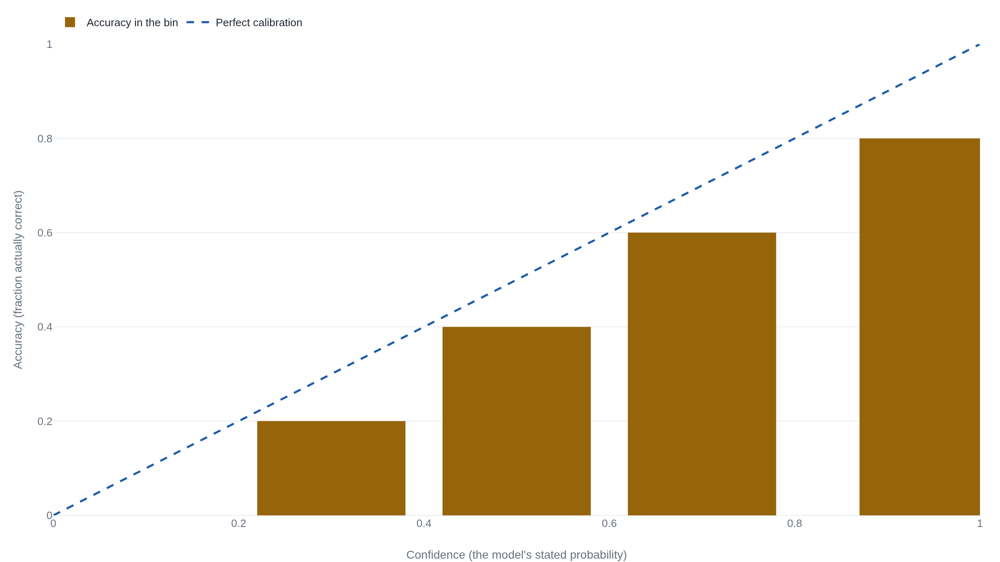

A model that only guesses the base rate scores zero calibration error
Expected calibration error checks whether a model's stated confidence matches how often it is right, and a coarse enough set of bins can hide most of the miscalibration it is meant to catch.
Why this matters
Every leaderboard that ranks AI models by accuracy answers one question: how often is the model right. A second question matters just as much: when the model is unsure, does it know it is unsure. Expected calibration error is the standard number for that second question, read wherever a model's confidence is trusted, from a medical classifier to a language model choosing a multiple-choice answer. By the end of this lesson you can compute it from a small table and read the reliability diagram it summarizes. You will also see why a low score can sit atop a badly miscalibrated model, including the case where post-training left GPT-4's confidence worse than it began.
- 01
- Post-training makes a model less able to tell when it's wrong: what a chatbot's typed confidence is, and why it is not a reading of the model's own probabilities.
- 02
- A faithful summary of a false passage passes the hallucination test: a companion Instruments lesson on a percentage read, too readily, as a verdict on whether a model can be trusted.
A calibrated model is right as often as it says it is
A weather forecaster who says there is a 70 percent chance of rain is not making a promise about tomorrow. It is a claim about the whole run of days he says it: across many such days, it should rain on about 70 percent of them. If it rains on 40 percent, his 70 was inflated. Calibration is that same test turned on any system that attaches a probability to a prediction, and a machine learning classifier attaches one every time it labels an image or picks a multiple-choice answer.
The probability a classifier reports for the answer it picks is its confidence. Guo and colleagues state the standard exactly: a model is perfectly calibrated when, across every case where it reports confidence p, it turns out correct a fraction p of the time.1 The number that measures how far it falls short of that is expected calibration error.
Bins turn single guesses into checkable rates
You cannot tell whether one 70 percent prediction was calibrated. The event either happened or it did not, so a single prediction is right or wrong, never 70 percent right. Calibration shows up only across many predictions, so group them first. Sort every prediction by its confidence and drop it into a bin: one bin for confidences from 0 to 0.2, the next from 0.2 to 0.4, and so on up to 1. Inside a bin, two numbers can finally be compared: the average confidence the model reported, and the fraction of those predictions that turned out correct. The first is what the model claimed, the second what happened.
Plot the two against each other, confidence along the bottom and accuracy up the side, and you have a reliability diagram. A perfectly calibrated model lands every bin on the 45-degree line, where accuracy equals confidence.1 A bar below the line is a bin where the model was more confident than it had earned. The diagram leaves out how many predictions sit in each bin.1
Here is the picture for a made-up classifier: a hundred predictions in five bins. The numbers are invented, kept small enough to check by hand, but the shape is real: the overconfidence Guo and colleagues found in deep networks, every bar under the line.1

Bigger bins count more toward the ECE
Expected calibration error, ECE, collapses the whole diagram into a single figure: the average gap between confidence and accuracy, with each bin weighted by how many predictions fall in it. Two papers are worth naming: Naeini and colleagues introduced the binned estimator in 2015,2 and Guo and colleagues gave it the form now standard in deep learning, comparing each bin's accuracy to its mean confidence.1 That is the form used here.
- \lvert B_m \rverthow many predictions land in bin m; divided by n, the total, it becomes that bin's weight.
- \mathrm{acc}(B_m)the fraction of predictions in the bin that were correct.
- \mathrm{conf}(B_m)the average confidence the model reported in the bin.
Run it on the made-up classifier. Each row is a bin: how many predictions landed there, the average confidence, the fraction correct, the gap, and that gap weighted by the bin's share of the hundred.
| Bin | Predictions | Confidence | Accuracy | Gap | Weighted gap |
|---|---|---|---|---|---|
| 0.0–0.2 | 5 | 0.10 | 0.00 | 0.10 | 0.005 |
| 0.2–0.4 | 10 | 0.30 | 0.20 | 0.10 | 0.010 |
| 0.4–0.6 | 15 | 0.50 | 0.40 | 0.10 | 0.015 |
| 0.6–0.8 | 30 | 0.70 | 0.60 | 0.10 | 0.030 |
| 0.8–1.0 | 40 | 0.95 | 0.80 | 0.15 | 0.060 |
The weights sum to one, since every prediction lands in one bin. The five weighted gaps add to 0.120, so this classifier's ECE is 12.0 percent: on average, its stated confidence overshoots its accuracy by about twelve points.1 ECE is an average, so one bad bin can be diluted by calmer ones. Here the top bin misses by fifteen points while the headline reads twelve, an early sign that one figure can smooth over the cases that matter most.
Two ways a low ECE hides real miscalibration
The number has a soft spot: the binning. Widen the bins and gaps that point in opposite directions begin to cancel. Take fifty predictions the model called 55 percent that were right 75 percent of the time, and fifty it called 65 percent that were right 45 percent of the time. Split them at 0.6 and each bin misses by twenty points, for an ECE of 20 percent. Merge them into one bin from 0.5 to 1.0 and the averages collapse together: mean confidence 60 percent, mean accuracy 60 percent, gap zero. The same predictions and the same outcomes now read as perfectly calibrated.34
Kumar and colleagues proved that binning can only ever understate the true calibration error, because averaging inside a bin lets its internal disagreements cancel.3 On ImageNet they read a model at roughly 0.02 with the fifteen bins Guo used, while the real error was at least twice that.3 Nixon and colleagues went further and constructed a predictor with an ECE of exactly zero that was badly miscalibrated, its opposite errors buried inside single bins.4 They also showed why equal-width bins fit poorly: a confident network piles most predictions near 1, so one or two bins carry the weight while the rest sit empty.4 The repair is to let the bins follow the data. Adaptive binning sets the edges so each bin holds the same number of predictions, putting resolution where the predictions are.4 Report the bin count next to any ECE, because the number moves with it.
There is a deeper limit, and it survives any choice of bins. Calibration says nothing about whether the model knows anything. Suppose a model ignores its input and reports 30 percent on all hundred cases, of which thirty are positive. Every prediction lands in one bin, where confidence is 30 percent and accuracy is 30 percent, so the gap is zero. By the definition, this do-nothing model is perfectly calibrated.1 It is also useless: it cannot tell a positive case from a negative one.
The Brier score notices the difference. It grades each prediction on the squared distance between the probability and what happened, then averages. Brier proved in 1950 that this kind of score, a proper scoring rule, cannot be beaten by bluffing: a forecaster does best by stating the probabilities he actually believes.5 In the binary form common in machine learning today it runs from 0 for a flawless forecaster to 1 for the worst.6 The do-nothing 30 percent model scores 0.21, a model that genuinely sorted the cases would score lower, and a perfect one would score zero.6 ECE calls the do-nothing model and the perfect one both flawless. Brier tells them apart. Brier's original 1950 score summed over both outcomes and ran to 2, doubling every figure, so any Brier number has to say which convention it uses.5
How post-training left GPT-4 more confident than correct
None of this would bite if models were naturally honest about their uncertainty, and older ones were. A 2005 study found neural networks among the best-calibrated learners, needing no correction.7 Then the networks got deep. Guo and colleagues showed that a 110-layer network on CIFAR-100 was far more confident than accurate, where a shallow five-layer network from the earlier era had stayed close to the line.1 Depth, width, and batch normalization all pushed calibration the wrong way. The driver was the training itself. Once a network fits its training data, it can keep lowering its loss only by making its correct answers more confident.1
Their fix was almost embarrassingly small. Temperature scaling divides the model's outputs by a single learned number before they become probabilities. That softens the overconfident ones without changing which answer the model picks, so it costs no accuracy.1 On that same 110-layer network it cut ECE from 16.5 percent to 1.3 percent.1
The same pattern turned up in a model people actually depend on. OpenAI's GPT-4 technical report gives calibration curves for two versions of the model on a slice of a multiple-choice exam. The pretrained model, before any tuning for helpfulness, was highly calibrated, with an ECE of 0.007. After post-training with reinforcement learning from human feedback, the same model's ECE rose to 0.074, roughly ten times worse.8 The confidence being measured there is the probability the model assigned across the choices A, B, C, and D, not a percentage the chatbot types out in words.8 The report does not state how many bins it used, so those two figures carry the same bin-dependence as any other ECE.8
Two failures are easy to run together here, and they are not the same. A metric that a coarse binning can flatter is one problem. A model whose confidence genuinely decayed is another. OpenAI's numbers are the second kind: an honest self-report of a real change, measured with the company's own consistent binning, not a bin chosen to flatter it.8 Post-training did not fool the metric. It made the model worse at knowing what it knew. Where the confidence a chatbot types in words actually comes from, and why it was never a reading of these internal probabilities, is a separate lesson.
The takeaway
Calibration and accuracy are two different virtues, and expected calibration error measures only the first. Computing it is straightforward: bin the predictions by confidence, find the gap between confidence and accuracy in each bin, and average those gaps by bin size. The reliability diagram is that same comparison drawn as a picture. Coarse bins let opposite errors cancel, so the score you report depends on how you drew the bins. And because calibration ignores accuracy, a model that only ever guesses the base rate scores a perfect zero while knowing nothing. When GPT-4's calibration decayed after post-training, its own makers could see it in this number, but only because they read it honestly. A low ECE certifies one thing: that on some binned test set, the model's stated confidence matched how often it was right. It does not certify that the model knows anything, nor that a finer set of bins would agree.
- 01
- Guo et al., On Calibration of Modern Neural Networks: the paper that made ECE standard and diagnosed deep-network overconfidence, with temperature scaling as the fix.
- 02
- Nixon et al., Measuring Calibration in Deep Learning: a catalogue of ECE's failure modes and the case for adaptive binning.
Sources
- PMLR · Guo, Pleiss, Sun & Weinberger, On Calibration of Modern Neural Networks (ICML 2017)
- AAAI · Naeini, Cooper & Hauskrecht, Obtaining Well-Calibrated Probabilities Using Bayesian Binning (2015)
- NeurIPS · Kumar, Liang & Ma, Verified Uncertainty Calibration (2019)
- arXiv · Nixon, Dusenberry, Zhang, Jerfel & Tran, Measuring Calibration in Deep Learning (2019)
- Monthly Weather Review · Brier, Verification of Forecasts Expressed in Terms of Probability (1950)
- arXiv · Wang, Calibration in Deep Learning: A Survey of the State-of-the-Art (2023)
- ICML · Niculescu-Mizil & Caruana, Predicting Good Probabilities with Supervised Learning (2005)
- arXiv · OpenAI, GPT-4 Technical Report (2023)